کتابخانهٔ اسکچنوت
۶۷ خلاصهٔ تصویری دستنویس در ۲ درس (۲۰ ارتوپدی و ۴۷ عفونی). این بخش از درسنامهها جدا نگه داشته شده و فقط تصویر است؛ هر کارت را بزنید تا گالری آن درس باز شود. تصاویر در اندازهٔ اصلی (۴۰۸۰ پیکسل) و با بزرگنمایی تمامصفحه ذخیره شدهاند.
اسکچنوتهای ارتوپدی
۲۰ تصویر · ارتوپدی · پیوند به درسنامهٔ تشریحی هر مبحث
 فصل ۱
کلیات
۱ از ۲۰گالری ←
فصل ۱
کلیات
۱ از ۲۰گالری ←
 فصل ۳
عوارض ناشی از شکستگیها و دررفتگیها
۲ از ۲۰گالری ←
فصل ۳
عوارض ناشی از شکستگیها و دررفتگیها
۲ از ۲۰گالری ←
 فصل ۴
شکستگیها و آسیبهای ستون فقرات
۳ از ۲۰گالری ←
فصل ۴
شکستگیها و آسیبهای ستون فقرات
۳ از ۲۰گالری ←
 فصل ۵
شکستگیها و دررفتگیهای اندام بالایی
۴ از ۲۰گالری ←
فصل ۵
شکستگیها و دررفتگیهای اندام بالایی
۴ از ۲۰گالری ←
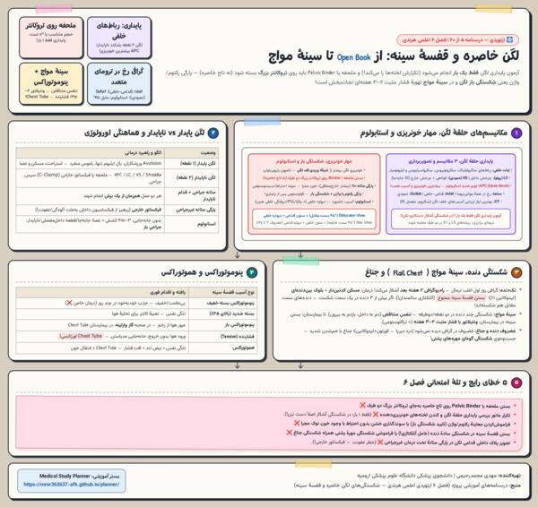
فصل ۶ شکستگیها و دررفتگیهای لگن خاصره و قفسهٔ سینه ۵ از ۲۰گالری ← فصل ۷
شکستگیها و دررفتگیهای اندام پایینی
۶ از ۲۰گالری ←
فصل ۷
شکستگیها و دررفتگیهای اندام پایینی
۶ از ۲۰گالری ←
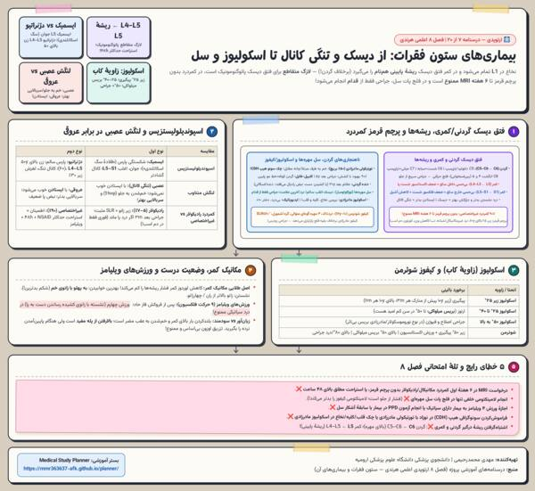
فصل ۸ ستون فقرات و بیماریهای آن ۷ از ۲۰گالری ← فصل ۹
شانه و بیماریهای آن
۸ از ۲۰گالری ←
فصل ۹
شانه و بیماریهای آن
۸ از ۲۰گالری ←
 فصل ۱۰
آرنج و بیماریهای آن
۹ از ۲۰گالری ←
فصل ۱۰
آرنج و بیماریهای آن
۹ از ۲۰گالری ←
 فصل ۱۱
مچ دست و بیماریهای آن
۱۰ از ۲۰گالری ←
فصل ۱۱
مچ دست و بیماریهای آن
۱۰ از ۲۰گالری ←
 فصل ۱۲
بیماریهای دست
۱۱ از ۲۰گالری ←
فصل ۱۲
بیماریهای دست
۱۱ از ۲۰گالری ←
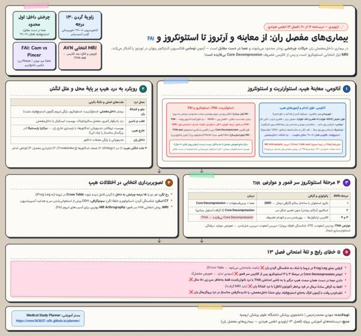
فصل ۱۳ بیماریهای مفصل ران ۱۲ از ۲۰گالری ←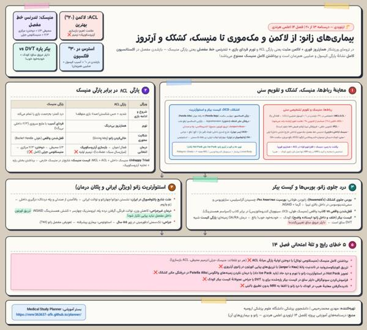
فصل ۱۴ زانو و بیماریهای آن ۱۳ از ۲۰گالری ← فصل ۱۵
پا، مچ پا و بیماریهای آنها
۱۴ از ۲۰گالری ←
فصل ۱۵
پا، مچ پا و بیماریهای آنها
۱۴ از ۲۰گالری ←
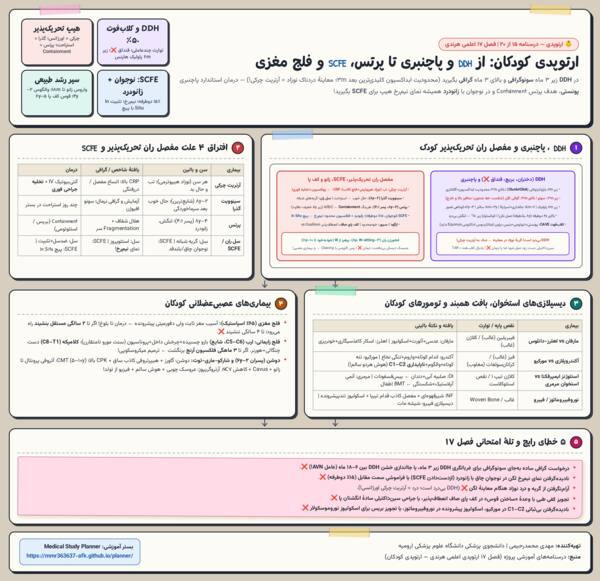
فصل ۱۷ ارتوپدی کودکان ۱۵ از ۲۰گالری ← فصل ۱۸
بیماریهای مفصلی
۱۶ از ۲۰گالری ←
فصل ۱۸
بیماریهای مفصلی
۱۶ از ۲۰گالری ←
 فصل ۲۰
بیماریهای متابولیک استخوان
۱۷ از ۲۰گالری ←
فصل ۲۰
بیماریهای متابولیک استخوان
۱۷ از ۲۰گالری ←
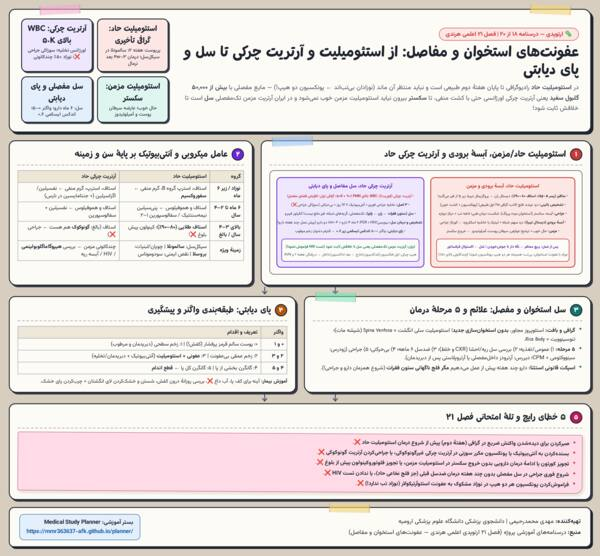
فصل ۲۱ عفونتهای استخوان و مفاصل ۱۸ از ۲۰گالری ←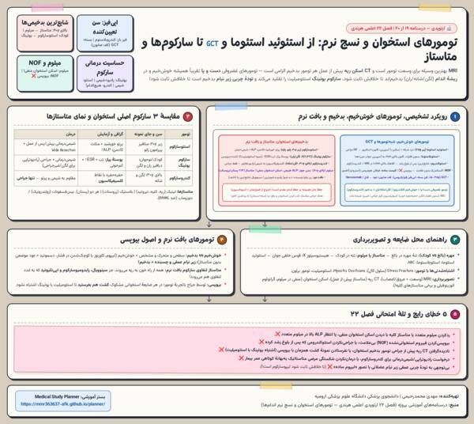
فصل ۲۲ تومورهای استخوان و نسج نرم اندامها ۱۹ از ۲۰گالری ← فصل ۲۳
قطع اندام
۲۰ از ۲۰گالری ←
فصل ۲۳
قطع اندام
۲۰ از ۲۰گالری ←
اسکچنوتهای عفونی
۴۷ تصویر · عفونی · پیوند به درسنامهٔ تشریحی هر مبحث
 درس ۱۲۴
رویکرد به بیمار عفونی: تاریخچه، معاینه، آزمایش و درمان تجربی
۱ از ۴۷گالری ←
درس ۱۲۴
رویکرد به بیمار عفونی: تاریخچه، معاینه، آزمایش و درمان تجربی
۱ از ۴۷گالری ←
 درس ۱۲۷
رویکرد به بیمار تبدار شدیداً بدحال با عفونت
۲ از ۴۷گالری ←
درس ۱۲۷
رویکرد به بیمار تبدار شدیداً بدحال با عفونت
۲ از ۴۷گالری ←
 درس ۱۳۱
پنومونی
۳ از ۴۷گالری ←
درس ۱۳۱
پنومونی
۳ از ۴۷گالری ←
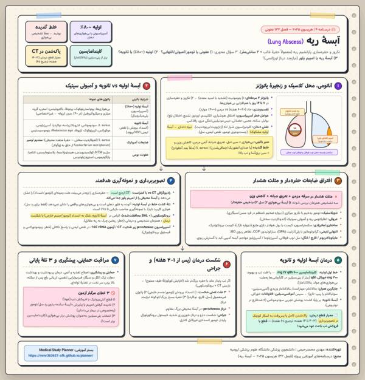
درس ۱۳۲ آبسهٔ ریه ۴ از ۴۷گالری ←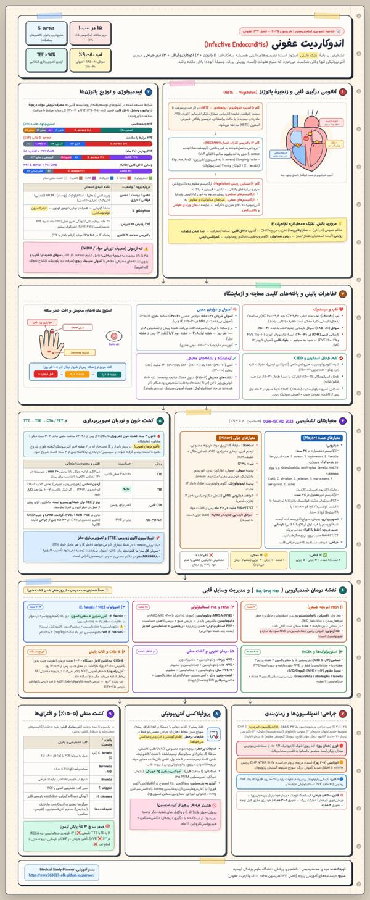
درس ۱۳۳ اندوکاردیت عفونی ۵ از ۴۷گالری ←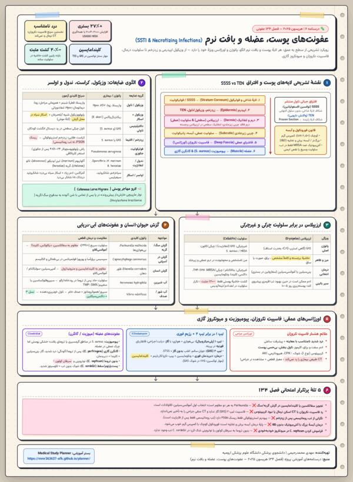
درس ۱۳۴ عفونتهای پوست، عضله و بافت نرم ۶ از ۴۷گالری ←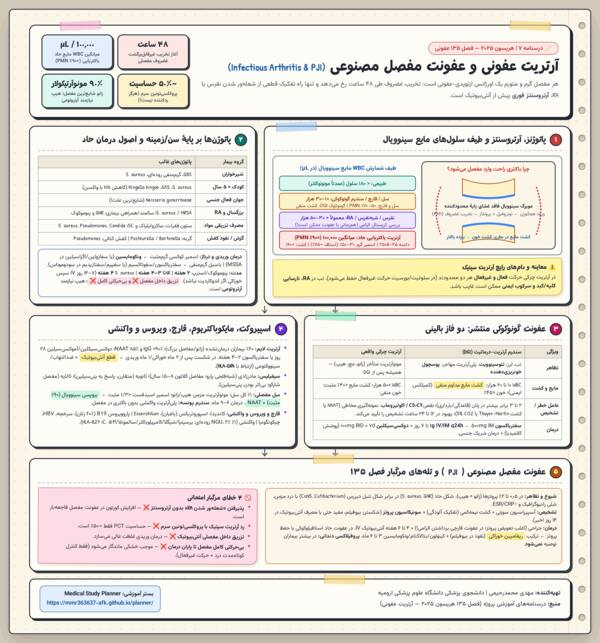
درس ۱۳۵ آرتریت عفونی ۷ از ۴۷گالری ←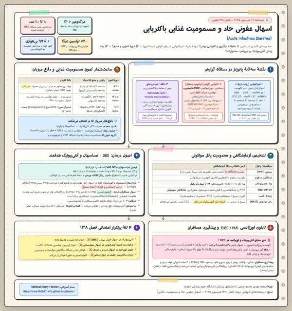
درس ۱۳۸ اسهال عفونی حاد و مسمومیت غذایی باکتریایی ۸ از ۴۷گالری ←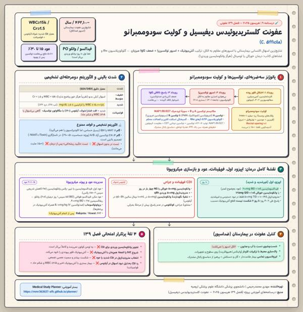
درس ۱۳۹ عفونت کلستریدیوئیدس دیفیسیل و کولیت سودوممبرانو ۹ از ۴۷گالری ← درس ۱۴۰
عفونتهای مجاری ادراری: سیستیت، پروستاتیت و پیلونفریت
۱۰ از ۴۷گالری ←
درس ۱۴۰
عفونتهای مجاری ادراری: سیستیت، پروستاتیت و پیلونفریت
۱۰ از ۴۷گالری ←
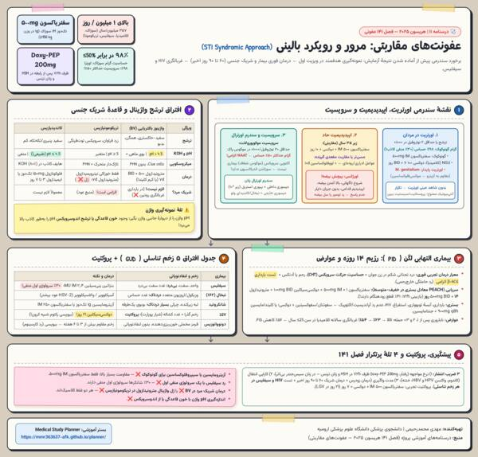
درس ۱۴۱ عفونتهای مقاربتی: مرور و رویکرد بالینی ۱۱ از ۴۷گالری ← درس ۱۴۳
مننژیت حاد
۱۲ از ۴۷گالری ←
درس ۱۴۳
مننژیت حاد
۱۲ از ۴۷گالری ←
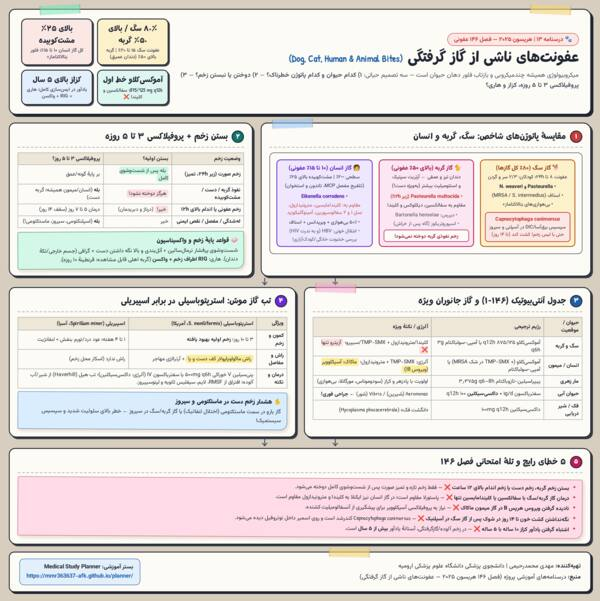
درس ۱۴۶ عفونتهای ناشی از گاز گرفتگی: سگ، گربه، انسان و حیوانات دیگر ۱۳ از ۴۷گالری ←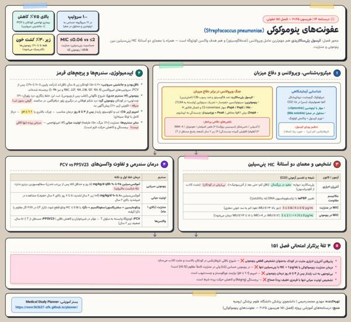
درس ۱۵۱ عفونتهای پنوموکوکی ۱۴ از ۴۷گالری ← درس ۱۵۲
عفونتهای استافیلوکوکی
۱۵ از ۴۷گالری ←
درس ۱۵۲
عفونتهای استافیلوکوکی
۱۵ از ۴۷گالری ←
 درس ۱۵۳
عفونتهای استرپتوکوکی: از فارنژیت و مخملک تا فاسیایتیس نکروزان
۱۶ از ۴۷گالری ←
درس ۱۵۳
عفونتهای استرپتوکوکی: از فارنژیت و مخملک تا فاسیایتیس نکروزان
۱۶ از ۴۷گالری ←
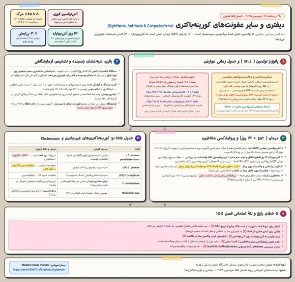
درس ۱۵۵ دیفتری و سایر عفونتهای کورینهباکتری: توکسین، شبهغشا و پادزهر ۱۷ از ۴۷گالری ← درس ۱۵۷
کزاز: از تریسموس تا اختلال خودکار
۱۸ از ۴۷گالری ←
درس ۱۵۷
کزاز: از تریسموس تا اختلال خودکار
۱۸ از ۴۷گالری ←
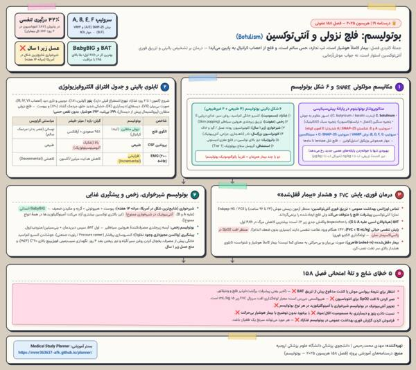
درس ۱۵۸ بوتولیسم: فلج نزولی و آنتیتوکسین ۱۹ از ۴۷گالری ←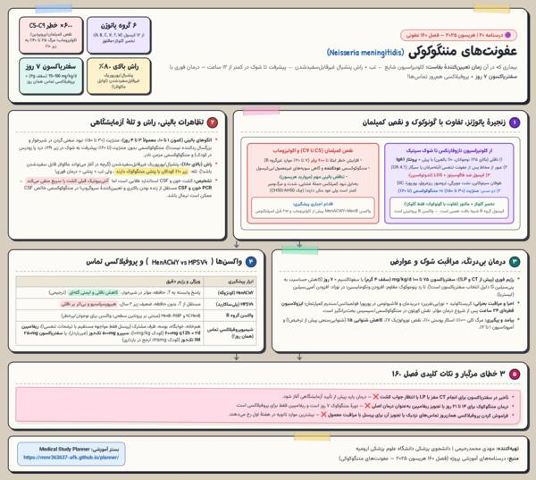
درس ۱۶۰ عفونتهای مننگوکوکی ۲۰ از ۴۷گالری ← درس ۱۶۱
عفونتهای گونوکوکی
۲۱ از ۴۷گالری ←
درس ۱۶۱
عفونتهای گونوکوکی
۲۱ از ۴۷گالری ←
 درس ۱۷۱
سالمونلوز: تب رودهای و سالمونلای غیرحصبهای
۲۲ از ۴۷گالری ←
درس ۱۷۱
سالمونلوز: تب رودهای و سالمونلای غیرحصبهای
۲۲ از ۴۷گالری ←
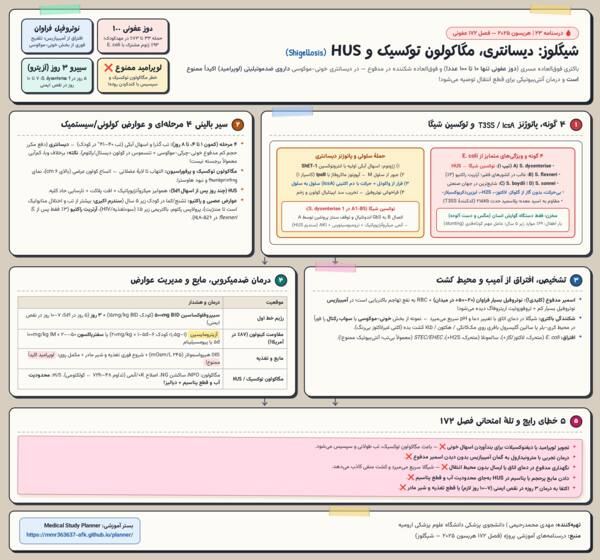
درس ۱۷۲ شیگلوز: دیسانتری، مگاکولون توکسیک و HUS ۲۳ از ۴۷گالری ←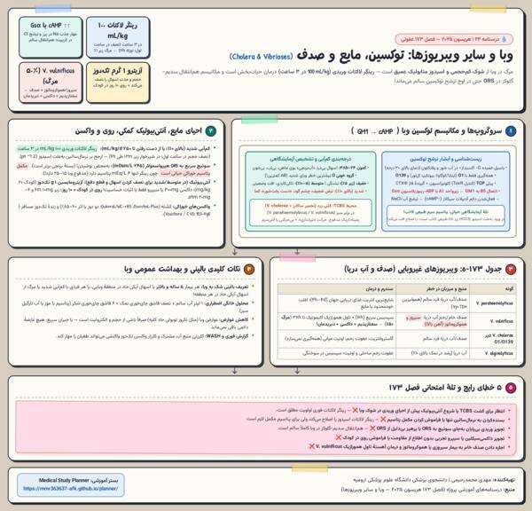
درس ۱۷۳ وبا و سایر ویبریوزها: توکسین، مایع و صدف ۲۴ از ۴۷گالری ←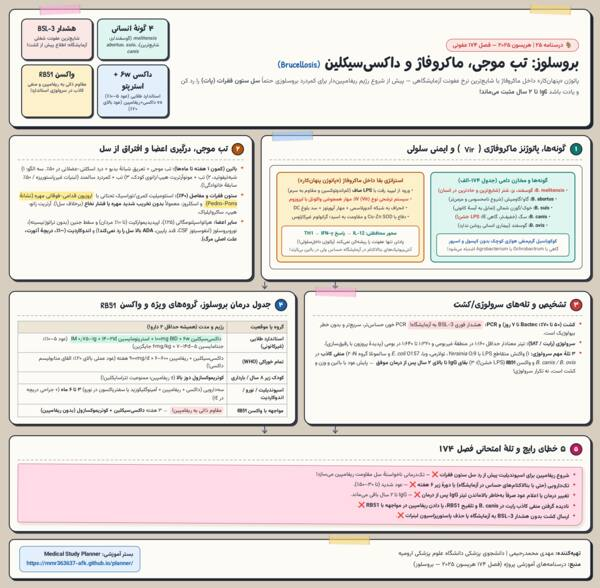
درس ۱۷۴ بروسلوز: تب موجی، ماکروفاژ و داکسیسیکلین ۲۵ از ۴۷گالری ← درس ۱۸۳
سل
۲۶ از ۴۷گالری ←
درس ۱۸۳
سل
۲۶ از ۴۷گالری ←
 درس ۱۸۹
لپتوسپیروز: از سیل و موش تا سندرم وایل
۲۷ از ۴۷گالری ←
درس ۱۸۹
لپتوسپیروز: از سیل و موش تا سندرم وایل
۲۷ از ۴۷گالری ←
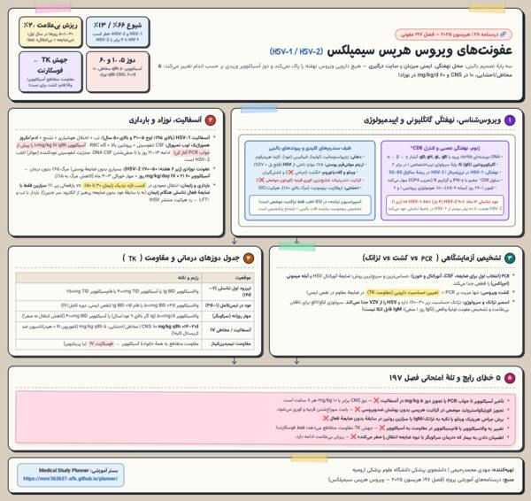
درس ۱۹۷ عفونتهای ویروس هرپس سیمپلکس ۲۸ از ۴۷گالری ← درس ۱۹۸
آبلهمرغان و زوستر: نهفتگی، درماتوم و نورالژی
۲۹ از ۴۷گالری ←
درس ۱۹۸
آبلهمرغان و زوستر: نهفتگی، درماتوم و نورالژی
۲۹ از ۴۷گالری ←
 درس ۱۹۹
EBV و مونونوکلئوز عفونی: CD21، CD8 و هتروفیل
۳۰ از ۴۷گالری ←
درس ۱۹۹
EBV و مونونوکلئوز عفونی: CD21، CD8 و هتروفیل
۳۰ از ۴۷گالری ←
 درس ۲۰۴
عفونتهای ویروسی تنفسی: از سرماخوردگی تا آنفلوآنزا
۳۱ از ۴۷گالری ←
درس ۲۰۴
عفونتهای ویروسی تنفسی: از سرماخوردگی تا آنفلوآنزا
۳۱ از ۴۷گالری ←
 درس ۲۰۵
کووید-۱۹
۳۲ از ۴۷گالری ←
درس ۲۰۵
کووید-۱۹
۳۲ از ۴۷گالری ←
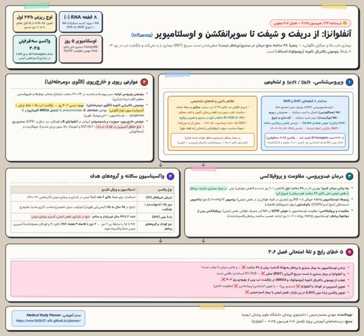
درس ۲۰۶ آنفلوانزا ۳۳ از ۴۷گالری ←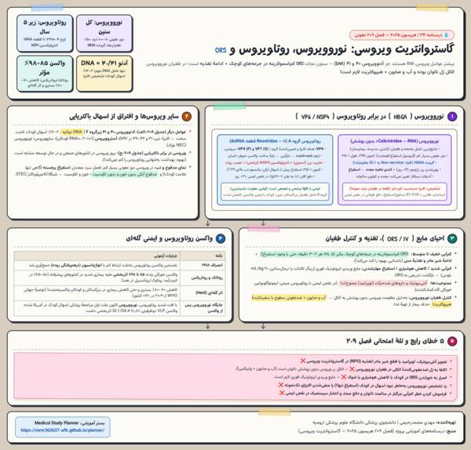
درس ۲۰۹ گاستروانتریت ویروسی: نوروویروس، روتاویروس و مایعدرمانی ۳۴ از ۴۷گالری ←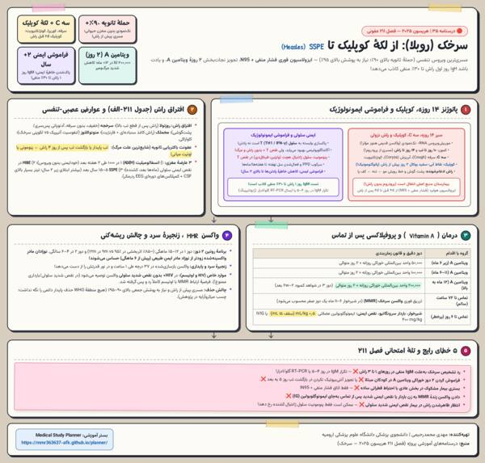
درس ۲۱۱ سرخک (روبلا): از لکهٔ کوپلیک تا SSPE ۳۵ از ۴۷گالری ←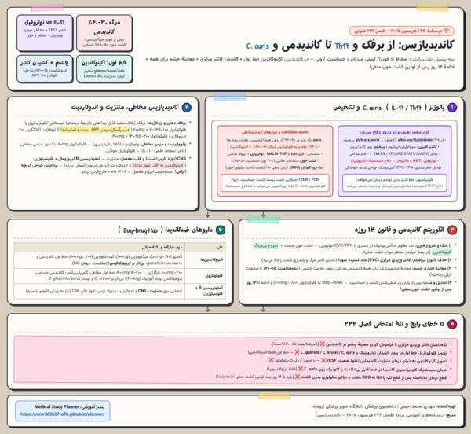
درس ۲۲۲ کاندیدیازیس ۳۶ از ۴۷گالری ←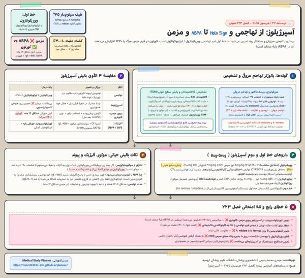
درس ۲۲۳ آسپرژیلوز ۳۷ از ۴۷گالری ← درس ۲۲۴
موکورمایکوزیس: از کتواسیدوز تا اسکار سیاه
۳۸ از ۴۷گالری ←
درس ۲۲۴
موکورمایکوزیس: از کتواسیدوز تا اسکار سیاه
۳۸ از ۴۷گالری ←
 درس ۲۳۰
آمیبیاز و آمیبهای آزادزی: از اسهال خونی تا PAM
۳۹ از ۴۷گالری ←
درس ۲۳۰
آمیبیاز و آمیبهای آزادزی: از اسهال خونی تا PAM
۳۹ از ۴۷گالری ←
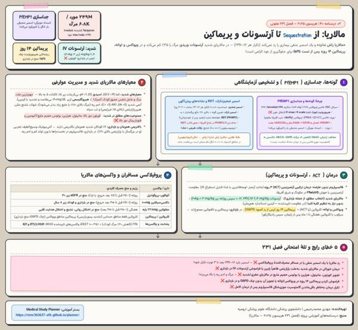
درس ۲۳۱ مالاریا ۴۰ از ۴۷گالری ← درس ۲۳۵
توکسوپلاسموز: از گربه تا انسفالیت حلقهای
۴۱ از ۴۷گالری ←
درس ۲۳۵
توکسوپلاسموز: از گربه تا انسفالیت حلقهای
۴۱ از ۴۷گالری ←
 درس ۲۳۹
نماتودهای رودهای: آسکاریس، کرم قلابدار و استرونژیلوئیدس
۴۲ از ۴۷گالری ←
درس ۲۳۹
نماتودهای رودهای: آسکاریس، کرم قلابدار و استرونژیلوئیدس
۴۲ از ۴۷گالری ←
 درس ۲۴۲
عفونتهای سستود: از کرم نواری تا هیداتید و نوروسیستیسرکوز
۴۳ از ۴۷گالری ←
درس ۲۴۲
عفونتهای سستود: از کرم نواری تا هیداتید و نوروسیستیسرکوز
۴۳ از ۴۷گالری ←
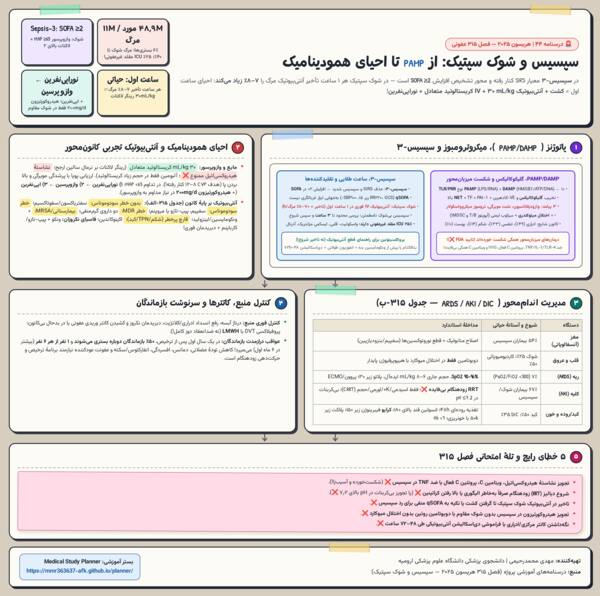
درس ۳۱۵ سپسیس و شوک سپتیک: از PAMP تا احیای همودینامیک ۴۴ از ۴۷گالری ← سل ۱۴۰۳
درمان سل (مصوبه ۱۴۰۳ کمیته کشوری سل)
۴۵ از ۴۷گالری ←
سل ۱۴۰۳
درمان سل (مصوبه ۱۴۰۳ کمیته کشوری سل)
۴۵ از ۴۷گالری ←
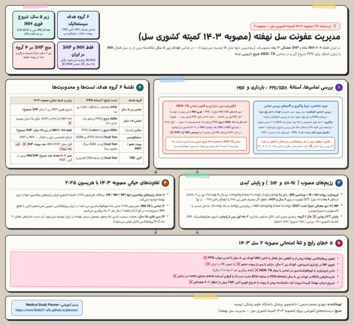
سل ۱۴۰۳ مدیریت عفونت سل نهفته (مصوبه ۱۴۰۳ کمیته کشوری سل) ۴۶ از ۴۷گالری ←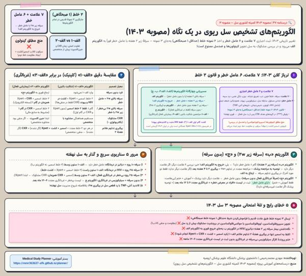
سل ۱۴۰۳ الگوریتمهای تشخیص سل ریوی در یک نگاه (مصوبه ۱۴۰۳ کمیته کشوری سل) ۴۷ از ۴۷گالری ←